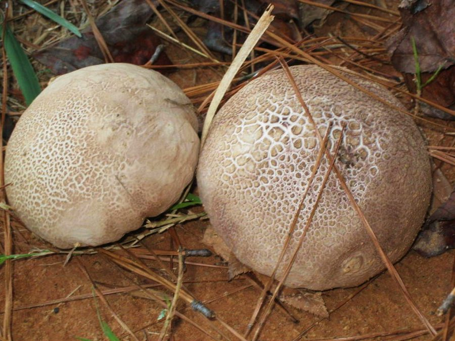

गोबर छत्ताLilac Puffball
Calvatia cyathiformis · Lycoperdaceae · FNG-0008

- Scientific name
- Calvatia cyathiformis (Bosc) Morgan
- Family
- Lycoperdaceae
- Hindi
- गोबर छत्ता
- Status here
- native
- IUCN
- not evaluated
When to look कब देखें
Expected mainly in August, September, October.
गोबर छत्ता / Lilac Puffball
Calvatia cyathiformis (Bosc) Morgan — Lycoperdaceae
गोबर छत्ता (लाइलैक पफबॉल या पफबॉल) — उत्तर प्रदेश के घास के मैदानों, चरागाहों और खाली खेतों में मानसून के दौरान (अगस्त से अक्टूबर) उगने वाला एक गोलाकार, मध्यम से बड़े आकार का पफबॉल कवक (puffball fungus) है। यह शुरू में सफेद और चिकना होता है, जो पकने पर भूरा-पीला हो जाता है और इसका ऊपरी हिस्सा प्याले के आकार में फट जाता है। इसके अंदर का हिस्सा शुरुआत में ठोस सफेद होता है, जो बाद में बीजाणुओं (spores) के परिपक्व होने पर बैंगनी-भूरे रंग के पाउडर में बदल जाता है। यह पफबॉल तभी तक खाने योग्य होता है जब तक कि यह अंदर से पूरी तरह से सफेद और ठोस हो; पके हुए भूरे पफबॉल का सेवन नहीं करना चाहिए। महत्वपूर्ण चेतावनी: जंगली मशरूम खाने से पहले एक प्रशिक्षित कवक विज्ञानी (mycologist) द्वारा सटीक पहचान आवश्यक है, क्योंकि कई विषैले कवक देखने में बिल्कुल इसके जैसे लगते हैं।
Quick Identification त्वरित पहचान
| Feature | Description |
|---|---|
| Fruiting Body | Pear-shaped or sub-globose (5–15 cm diameter, 7–20 cm tall), tapering to a thick, sterile base |
| Outer Skin (Peridium) | White to dull cream when young, smooth or slightly cracked, turning purplish-brown and breaking open at maturity |
| Interior (Gleba) | Solid white and fleshy when immature, turning olive-brown and finally a dusty, lilac-purple spore mass |
| Sterile Base | A thick, cup-like stem-like base remains attached to the soil long after the upper spore mass has dispersed |
| Spore Release | Lacks a defined single opening (ostiole); the entire upper skin breaks and flakes away to expose the purple spore cloud |
Field tip: Look for large, white, round, loaf-like balls sitting in grassy pastures. If cutting one open reveals a solid, uniform white flesh with no gill structures, it is a young puffball. Older specimens are papery cups filled with purple-brown dust.
Morphology आकारिकी
Biometrics (typical measurements for specimens in Basti):
| Feature | Measurement |
|---|---|
| Cap/fruiting body diameter | 5–15 cm |
| Stipe height | 5–10 cm (sterile base) |
| Stipe diameter | 4–8 cm (sterile base) |
| Spore print colour | Lilac to purple-brown |
Gleba: The spore-producing tissue (gleba) fills the upper part of the fruiting body. It contains no gills, pores, or tubes. At maturity, the cells break down, leaving only a cottony mass of capillitium threads and billions of microscopic purple-brown spores.
Spores: Spherical, finely warted (verrucose), measuring 3.5–5 µm in diameter, with a distinctive lilac-purple tint under the microscope.
Ecology and Substrate पारिस्थितिकी और आधार
Calvatia cyathiformis is a saprotrophic soil fungus. It feeds on decaying organic matter, such as dead grass roots, manure, and leaf litter. It grows on the ground in pastures and grassy commons in Basti, appearing singly or in small groups after heavy rainfall. It plays a vital role in releasing organic nutrients back to pasture grass.
Life Cycle / Phenology जीवन चक्र
- Vegetative Phase: The mycelial network grows underground during the warm months.
- Fruiting: Triggered by high moisture and moderate temperatures in late monsoon (August–October), forming the round white puffballs.
- Spore Dispersion: As the peridium dries and flakes off, wind and raindrops hit the exposed mass, causing clouds of millions of lilac spores to puff out and disperse into the air.
Associated Species and Decay Role सहजीवी संबंध और अपघटन कार्य
- Decomposition: Promotes organic matter decay in grasslands, improving soil quality.
- Micro-fauna: The mature, dry, cup-like base provides temporary shelter for small ground beetles and spiders.
Agricultural / Human Relevance कृषि प्रासंगिकता
Pasture mushroom and safety warnings.
- Edibility: The young, solid white puffballs are edible and mild-tasting. However, expert identification by a trained mycologist is essential before consuming any wild mushroom.
- Foraging Rule: Never eat a puffball if the inside shows any yellow, brown, or purple discoloration, or if it has the outline of a developing gill-mushroom inside (which indicates a toxic Amanita button stage).
- Educational Value: The dry, mature puffballs release a large cloud of purple dust when compressed. This is a popular nature play activity for children in UP villages, teaching them about fungal spores.
- Traditional Wound Care: In some local folk traditions, the dry spore powder was dusted onto minor animal cuts to stop bleeding (styptic effect), but this can cause respiratory irritation if inhaled.
Expected Locally स्थानीय रूप से अपेक्षित
Not a field record. Written from published accounts for eastern Uttar Pradesh. No confirmed local sighting yet — if you have seen it, that is what the atlas needs.
अभी तक स्थानीय पुष्टि नहीं। यह विवरण प्रकाशित स्रोतों से है, किसी अवलोकन से नहीं।
Commonly seen in Basti district's open fields, roadside grassy margins, and cow pastures in Harraiya and Bahadurpur blocks. It is easily noticed in late September due to its large white size contrasting with green grass. Villagers refer to it as "Gobar Chhatta," a generic name shared with other pasture mushrooms.
Distribution वितरण
Global range: Widespread in tropical, subtropical, and warm temperate regions of North and South America, Asia, and Africa.
In India: Common in plains and lower hill pastures during the monsoon.
In Uttar Pradesh: Found in all districts with grassy pasture land.
In Basti district / eastern UP: Native resident; moderately common in fields.
Research Questions शोध प्रश्न
- How does the size of Calvatia cyathiformis fruiting bodies compare between high-grazing pastures and undisturbed village school lawns in Basti?
- What is the duration of the edible white stage of Calvatia cyathiformis before it begins turning yellow-purple under Basti's September temperatures?
- Can a child find a dry, mature puffball and gently tap it with a twig to observe the purple-brown spore cloud emerge? — A simple hands-on sensory exploration.
- Is there any difference in the heavy metal accumulation of Calvatia cyathiformis compared to Agaricus campestris (
[FNG-0006]) in the same Basti pasture? - How long does the sterile, cup-like base of Calvatia cyathiformis persist in the field after all the spores have dispersed? / पफबॉल के सभी बीजाणुओं के बिखरने के बाद उसका कप जैसा सूखा आधार खेत में कितने समय तक बना रहता है?
Similar Species मिलती-जुलती प्रजातियाँ
| Species | Key Difference | हिंदी |
|---|---|---|
| Calvatia gigantea (Giant Puffball) | Grows much larger (up to 50 cm or more); is strictly spherical (lacks a stem-like sterile base); spores are olive-brown (no purple tint). | विशाल पफबॉल — बहुत बड़ा आकार, पूर्ण गोलाकार, पीला-भूरा बीजाणु |
| Lycoperdon perlatum (Gemmed Puffball) | Much smaller (2–6 cm); cap surface is covered in small, easily rubbed-off warts/spines; releases spores through a single top hole. | कांटेदार पफबॉल — छोटा आकार, सतह पर छोटे कांटे, शीर्ष छिद्र |
| Amanita species (in button stage) | Cutting open reveals the outline of a developing cap, gills, and stem inside; extremely toxic. | अमानिता मशरूम (शिशु अवस्था) — काटने पर अंदर गिल्स की रूपरेखा दिखती है, अत्यंत जहरीला |
Taxonomy & Classification वर्गीकरण
Original description. The French botanist Louis Augustin Guillaume Bosc first described the species as Lycoperdon cyathiforme in 1811. The American mycologist Andrew Price Morgan transferred it to the genus Calvatia as Calvatia cyathiformis in 1890 in the Journal of the Cincinnati Society of Natural History (Vol. 12, p. 168). The genus name Calvatia is derived from the Latin calvus (bald), referring to the smooth cap. The specific epithet cyathiformis means "cup-shaped," referring to the remaining sterile base.
Subspecies. Monotypic.
Family and order placement. Placed in the order Agaricales, family Lycoperdaceae, genus Calvatia.
Phylogenetic notes. Molecular studies place the puffball family Lycoperdaceae closely within the family Agaricaceae, representing a transition to gasteroid (internal spore-producing) forms.
IUCN status rationale. Not evaluated (NE) by the IUCN Fungal Conservation Committee. As a common and widespread grassland species, it is not threatened.
Photo Gallery फोटो गैलरी
References संदर्भ
- Morgan, A.P. (1890). North American Fungi: The Gasteromycetes. Journal of the Cincinnati Society of Natural History, 12, 163–172. [original description and transfer]
- Bilgrami, K.S., Jamaluddin, S., & Rizwi, M.A. (1991). Fungi of India: List and References. Today & Tomorrow's Printers and Publishers, New Delhi.
- Kreisel, H. (1994). Studies in the Calvatia complex (Basidiomycota). Feddes Repertorium, 105(3-4), 165–176.
- ICAR-Directorate of Mushroom Research. Guide to Edible and Poisonous Mushrooms. Solan.
- Zeller, S. M., & Smith, A. H. (1964). The genus Calvatia in North America. Lloydia, 27, 148–186.
- GBIF Occurrence Data — Calvatia cyathiformis (2026). GBIF taxon key: 2536054.
Source file: species/fungi/mushrooms/lilac_puffball.md